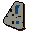

Wormbrain
| Config name | wormbrain |
| NPC id | 745 |
| Combat level | 2 |
| Hitpoints | 5 |
| Options | Talk-to, Attack |
| Wander range | 2 tiles from spawn |
| Max range | 4 tiles from spawn |
| Area folder | area_port_sarim |
| Defined in | scripts/areas/area_port_sarim/configs/port_sarim.npc |
Wormbrain
A badly behaved goblin.
Show all 1 spawn on the world map → Open in knowledge graph →
Drops
Drop script: scripts/quests/quest_dragon/scripts/wormbrain.rs2 (specific handler)
Always dropped
| Item | Quantity | Rarity | Notes |
|---|---|---|---|
 Map part | 1 | Always |
Locations
| Area | Coordinates | Level | Count | Map |
|---|---|---|---|---|
| Rimmington | 3014, 3186 | 0 | 1 | view |
Dialogue
PlayerWhat are you in for?
WormbrainMe not sure. Me pick some stuff up and take it away.
PlayerWell, did the stuff belong to you?
WormbrainUmm...no.
PlayerWell, that would be why then.
WormbrainOh, right.
PlayerSorry, thought this was a zoo.
PlayerI believe you've got a piece of map that I need.
WormbrainSo? Why should I be giving it to you? What you do for Wormbrain?
PlayerI'm not going to do anything for you. Forget it.
WormbrainBe dat way then.
PlayerI'll let you live. I could just kill you.
WormbrainHa! Me in here and you out dere. You not get map piece.
PlayerI suppose I could pay you for the map piece. Say, 500 coins?
WormbrainMe not stoopid, it worth at least 10,000 coins!
PlayerAlright then, 10,000 coins it is.
PlayerOops, I don't have enough on me.
WormbrainComes back when you has enough.
You buy the map piece from Wormbrain.
WormbrainFank you very much! Now me can bribe da guards, hehehe.
PlayerWhere did you get the map piece from?
WormbrainWe rob house of stupid wizard. She very old, not put up much fight at all. Hahaha!
PlayerUh... Hahaha.
WormbrainHer house full of pictures of a city on island and old pictures of people. Me not recognise island.
WormbrainMe find map piece. Me not know what it is, but it in locked box so me figure it important.
WormbrainBut, by the time me get box open, other goblins gone. Then me not run fast enough and guards catch me.
WormbrainBut now you want map piece so must be special! What you do for me to get it?
Quests
Referenced in scripts
scripts/quests/quest_dragon/scripts/wormbrain.rs2scripts/skill_combat/scripts/npc/npc_combat.rs2scripts/skill_combat/scripts/player/player_magic.rs2